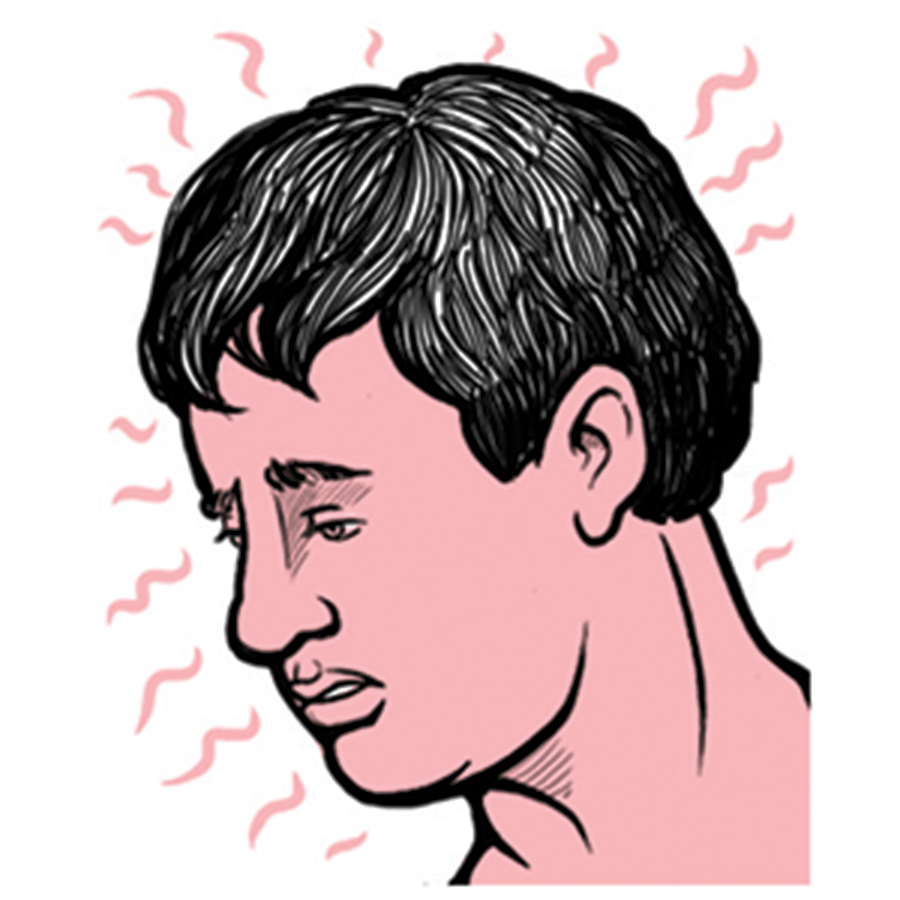
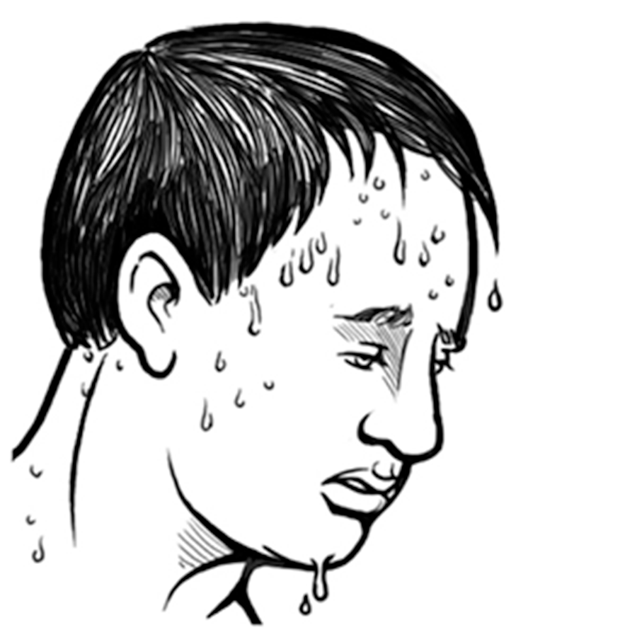
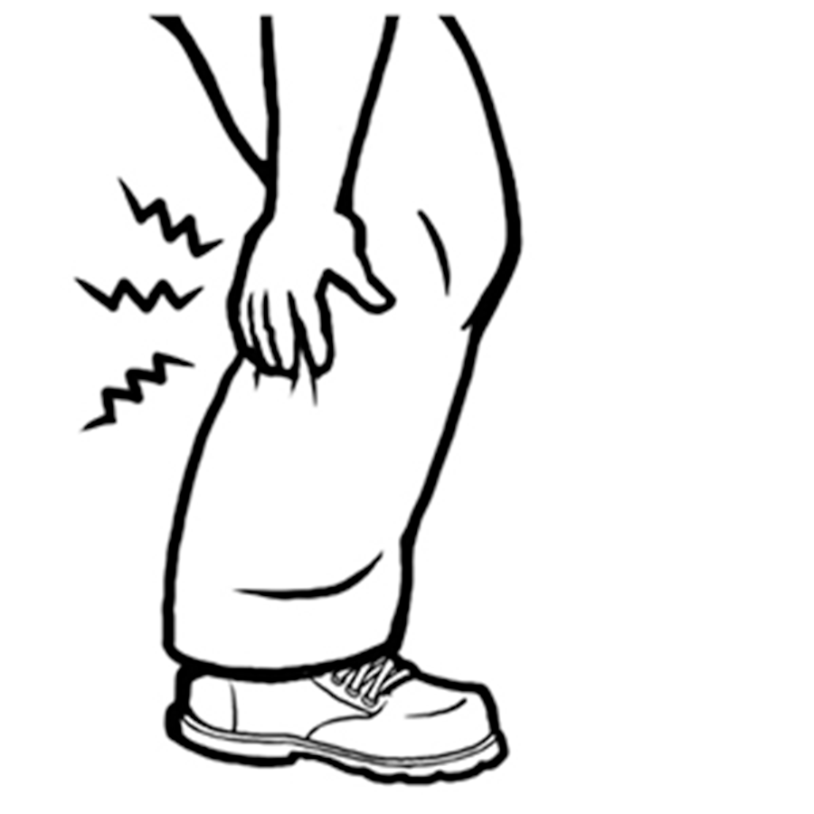

Revisa los primeros auxilios para la insolación

- Desorientación, dificultad por hablar
- Perdido de la conciencia
- Piel enrojecida, caliente y seca o sudoración excesiva
- Temperatura corporal muy alta
- Convulsiones
Revisa los primeros auxilios para agotamiento por el calor

- Piel fría y húmeda
- Sudoración profusa
- Dolor de cabeza
- Náuseas o vómitos
- Mareo
- Aturdimiento
- Debilidad
- Sed
- Irritabilidad
- Pulso rápidas
- Disminución del gasto urinario
Revisa los primeros auxilios para la rhabdomyolysis
- Calambres/dolor de músculos
- Orina anormalmente oscura (el color de té)
- Debilidad
- Intolerancia al ejercicio
Revisa los primeros auxilios para calambres por calor

- Espasmos y dolores musculares
- Por lo general, en el abdomen, los brazos o las piernas
Revisa los primeros auxilios para el sarpullido
- Pequeños grupos de ampollas rojas en la piel
- Aparece a menudo en el cuello, parte superior del pecho, ingle, bajo los senos, y en los pliegues de los codos